Problem
We looked at existing research available by UX research team on why people don’t upgrade. One major roadblock was Postman's free plan limits collaboration to 3 members. Teams could not invite more than 3 collaborators without upgrading, slowing teamwork and growth. This hindered upgrades until teams were sure Postman met their needs.
Users
Developers
Behaviour :
As a team lead, they mostly supervise projects and review work when needed. AS such these users will spend less time on Postman on a day to day basis. These users also frequently check emails for day to day communication.
Goal :
As a team lead, I want to ensure that our team will be able to actively collaborate on Postman and reduce the development time, so that I can make smart choice of purchasing a paid plan.
Hypothesis
By allowing larger teams to work together in common space for free for a limited time will allow them to collaborate will increase paid teams as they would be more confident to upgrade.
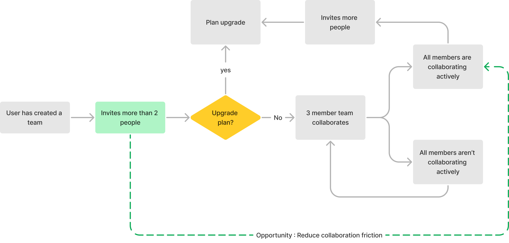
Assumptions
- The person who can influence upgrade decision would be part of this team.
- Users inviting people have APIs to work on
- People will automatically invite more people to collaborate once they opt into trial.
Designing trial experience v1
I explored what are the key steps of trial experience through secondary research and product benchmarking
Trial User Journey
- Discovery of trial experience by teams
- Activation of trial experience
- Utilise and evaluate premium plans offerings in free trial period
- Smooth upgrade and downgrade once trial ends.
Use Cases
- Teams invite more people than the free plan allows
- Teams wanting to opt into trial
Next I detailed out key user flows for the above user journey to help my design concepts.
Key Flows
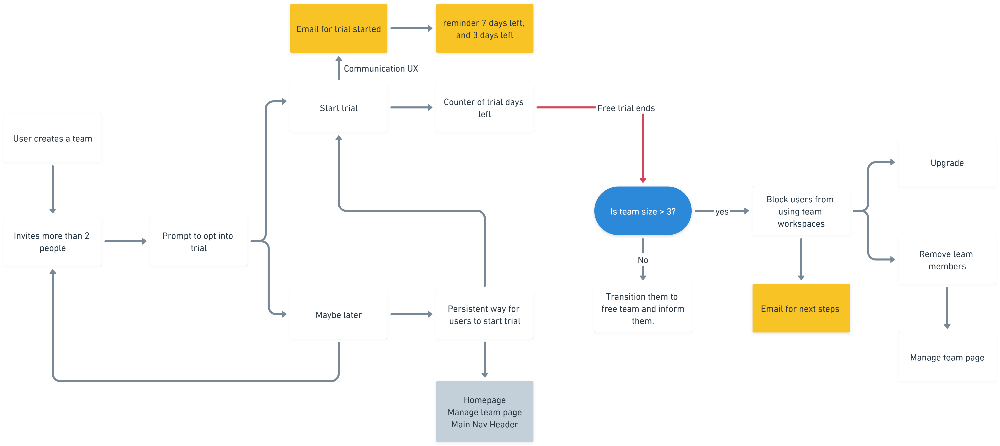
Final Designs
Let's take the case of teams inviting more people than allowed in free plan
1. Discovering the trial experience
When users invite, we show an start trial modal asking users to let all invited people collaborate by starting the trial

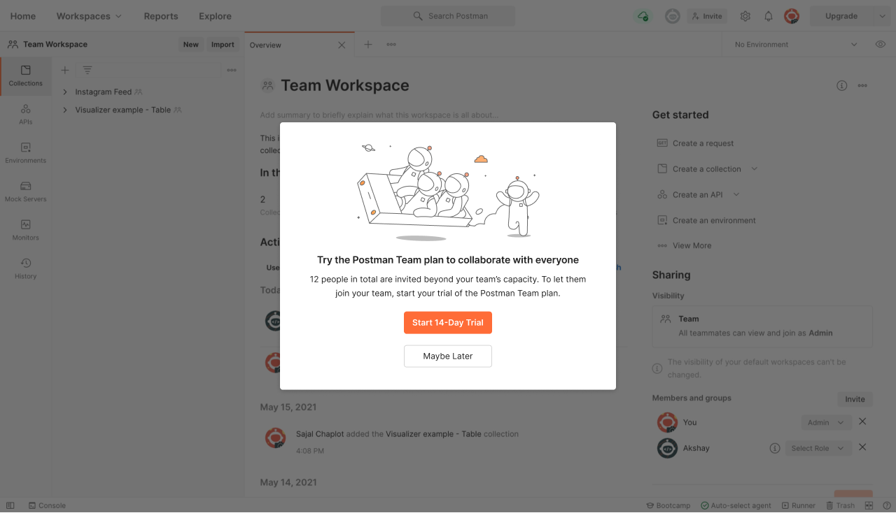
2. Quick activation
One click activates users the trial and we communicate the value offering in addition to letting invited users collaborate. Also, since users might not be present on Postman, we also communicate via emails
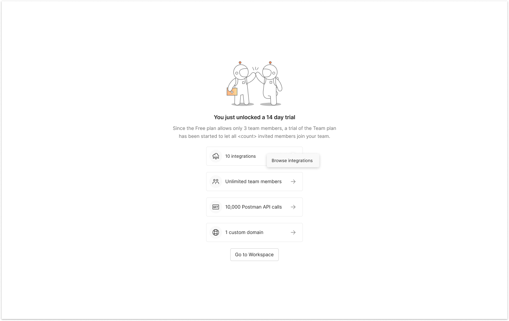
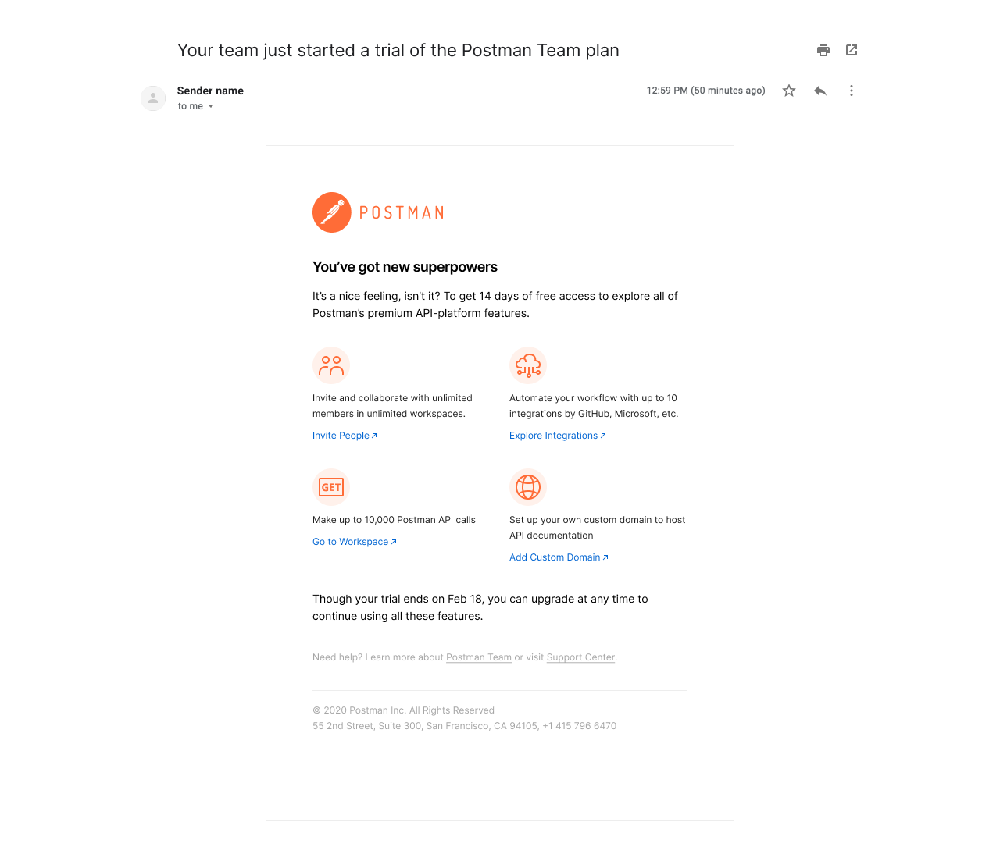
3. Prompting users to use trial
We communicate that only 7 days are left in trial, make the most of it by inviting people and work together.
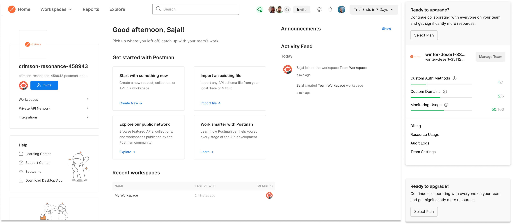
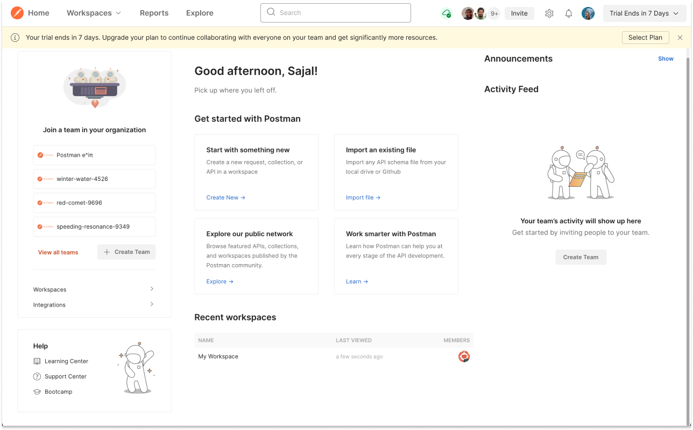
4. Upgrade or downgrade plan
If teams were within free plan limit they will automatically be shifted to free plan. If the teams had more members than free plan, we ask them to upgrade or remove people from the team.
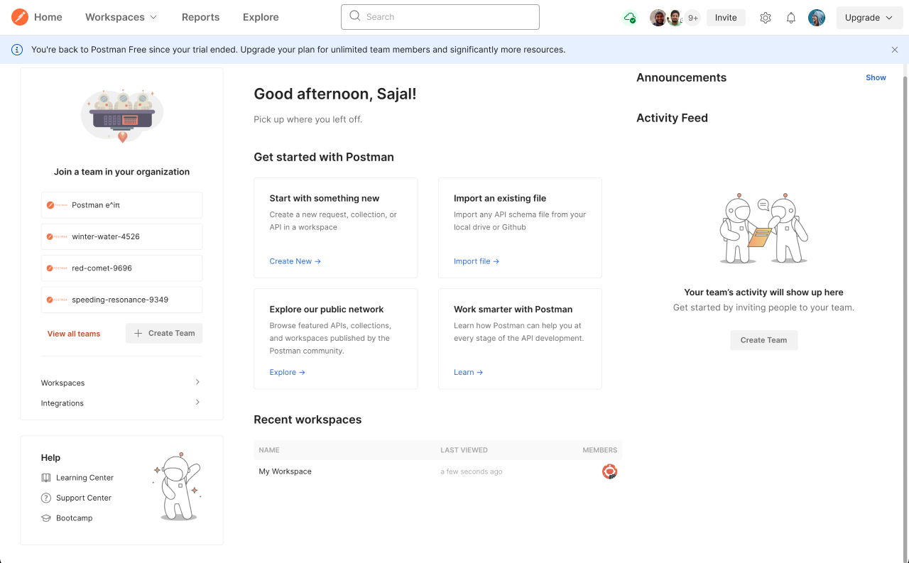
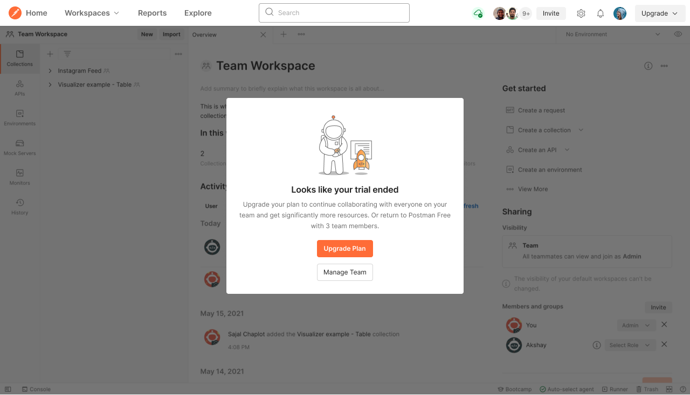
Result
We saw high number of conversion to paid plans but since the sample set starting the free trial was less, we couldn't say this impact will be true.
So, we decided to do trial v2
Designing trial experience v2
Since the major problem was teams opting into trial experience, we eliminated the opt in decision making and automatically started trial when teams were full and invited more members to further reduce the friction in collaboration for these teams. Hence the designs changed in the following manner.
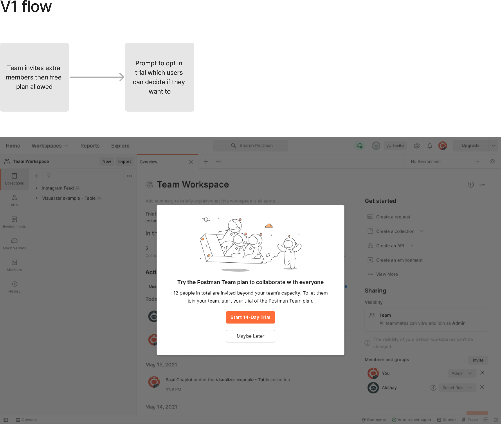
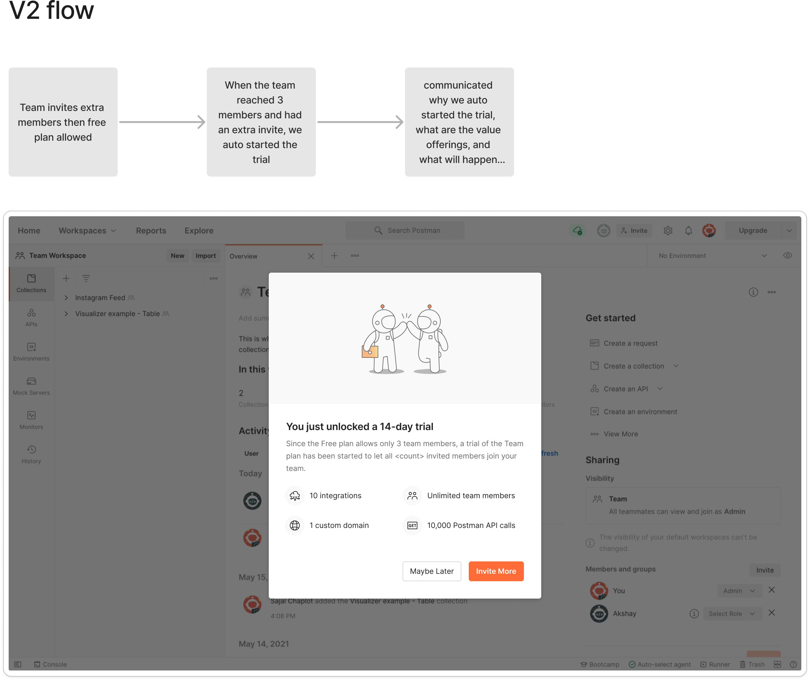
Impact
30%
Increase in conversion to paid teams from baseline
Future ideas
The scope of this project was to validate if our hypothesis was true, which we validated. Now we could optimise each part of this journey further to improve conversions from trial such as -
- We could improve trial engagement so more and more teams get the value and convert.
- We made an educated guess about trial period of 14 days. We could experiment with the duration.
- Enable teams to make smarter decisions by providing usage stats.
Learnings
- Experiments are all about scoping the project. One key skill I learned here is to decide how to scope down a project into requirements.
- Combining business impact with the user needs is tricky, but when focussed on letting users achieve their goals at slight extra cost to business can yield good long term impact for business.
- Always do a retro whenever possible, helps improve team’s productivity. This project I tried to improve design-dev handoff based on feedback from earlier experiments and was well appreciated by fellow engineers.
Glimpse how we collaborated remotely
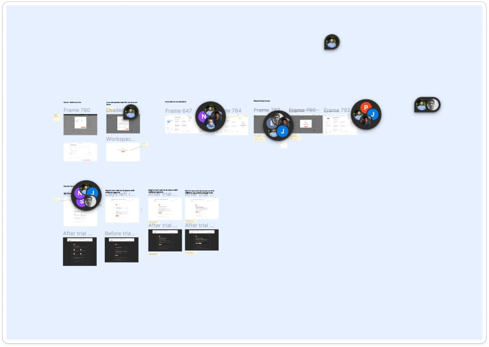